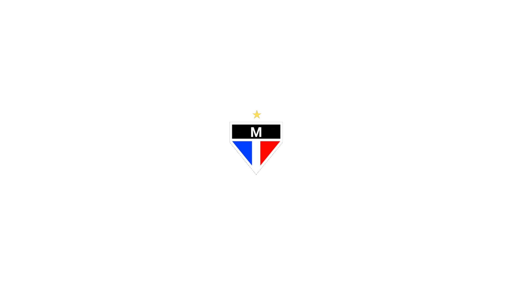
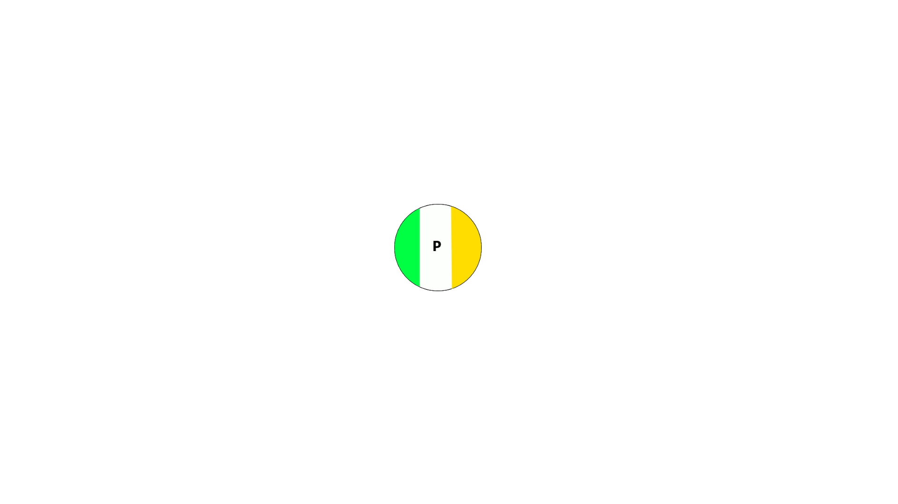

Copa dos Primos 2026
Competição real de futebol disputada entre Time M FC e Time P FC.
Próxima partida
A FINALÍSSIMA

VS

📅 Data: a definir
Jogos
Veja as partidas da competição.
📊Classificação
Acompanhe a tabela da competição.
👥Times
Conheça o Time M FC e o Time P FC.
🏆Histórico
Veja as edições anteriores da Copa dos Primos.